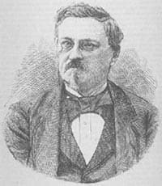
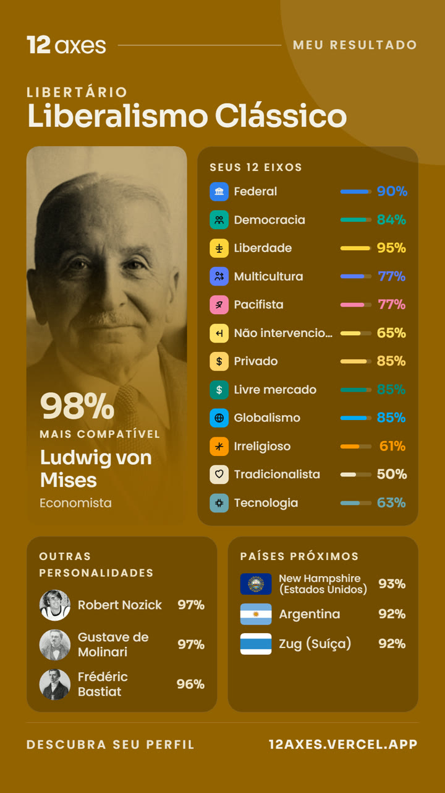

Economia
Com concorrência, empresas privadas prestam serviços melhores do que o Estado.
Concordo totalmente
Concordo
Concordo
Neutro ou Depende
Discordo
Discordo totalmente
— Descoberta política
Economia
— Análise concluída
— Uma frase que te descreve
Quero uma sociedade de direitos naturais e propriedade sagrada, com Estado mínimo e mercado livre como base da vida justa.
— Eixos políticos
— Países
Também próximos, por dimensão do seu perfil
— Personalidades
Também próximos, por dimensão do seu perfil

— Salvar ou compartilhar
Seu resultado em uma imagem, e um link direto para quem quiser ver.

Gratuito · Anônimo · Resultado imediato
12axes.vercel.app